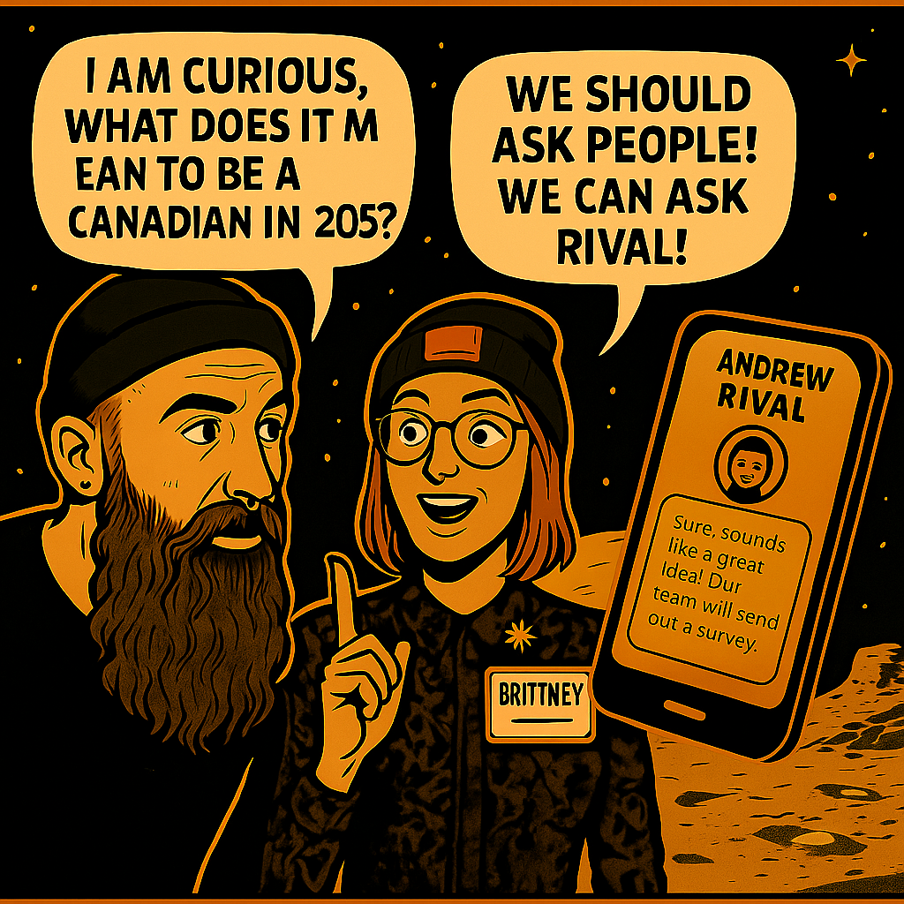

Kris, a curious voice in the AI community, found himself staring at his screen with a question dancing in his mind: "What does it mean to be Canadian in 2025?" A question mark bubbled above his head.
He turned to his friend Brittney, a thoughtful problem-solver. "Why don't we ask the people?" she said, smiling. "Let's ask Canadians themselves."
Inspired, Kris shot a message to the team at Rival, a survey company. Moments later, their response flashed back: "Cool, let's ask Canadians about identity." And just like that, a national conversation was sparked.

Together, they sparked a national conversation—1,001 voices from coast to coast to coast. But whose stories are we hearing?
The Survey Reaches the Nation
From coast to coast to coast, Canadians responded. Over 1,001 voices chimed in, from Nunavut to Newfoundland, from bustling cities to quiet villages.
Each dot on the map lit up as someone clicked "submit," shaping a collective response to identity.
"Let's meet the 1,001 voices behind the answers."
Meet the Respondents, the voices of Canada
Across the country, we met students, parents, newcomers, elders. We built tiles—1,001 of them—each one representing a unique voice.
Not all voices echoed equally. Urban Boomers from Ontario and Quebec spoke the loudest. But every voice mattered.
"We heard from 1,001 Canadians—but some voices carried farther than others."
These stories aren't static—they shuffle, morph, reshape. Just like identity.
2. The Voices Behind the Story
From Boomers in Toronto to Gen Z in Vancouver, newcomers in Montréal to lifelong residents of the Yukon—each voice adds a thread to Canada's tapestry. But some threads are louder than others:
72% urban/suburban | Under 5% remote/Northern
Boomers & Millennials dominate | Gen Z and immigrants quieter
This isn't just a survey—it's a mirror. Let's look closely at who's reflected, and who's missing.
The Identity Compass
We asked, "When you think about your identity, what feels most important?"
What anchors identity in Canada? For Gen Z, passions. For Boomers, heritage. For rural dwellers, community and land.
Despite our differences, shared values pulse at the center.
The Heart of Canadian Identity
When asked what shapes their identity, Canadians spoke of:
Core values (28%) – "My principles define me"
Personal passions (19%) – "I'm more than my passport"
Community ties (13%) – "We look out for each other"
But dig deeper, and generational cracks appear:
Boomers cling to heritage and land. Gen Z champions individuality and creativity. Rural Canadians root identity in place; urbanites in work and diversity.
The Connection Paradox
We asked Canadians: "How connected do you feel to Canadian identity?"
80.8% feel connected. But Gen Z struggles. Urban areas feel less rooted than rural towns.
"In small towns, identity is lived. In cities, it's debated."
ADD GRAPH HERE
4. The Connection Paradox
80% feel connected to Canada—but peel back the layers, and contradictions emerge:
Rural Canadians: 56% 'very connected'
Urbanites: 48%
Boomers: 71% vs. Gen Z: 22%
"I belong here" (Ontario) vs. "Canada doesn't see me" (Quebec critics)
Connection isn't just geography—it's time, trust, and sometimes, tension.
Why Do (or Don't) People Feel Connected?
What binds—and divides—us?
Belonging is powerful. The land, especially, offers connection—yet not all feel that embrace. Some cite broken promises of diversity.
The landscape comforts some. It alienates others.
"Canada is a country of diverse people."
"I feel at odds with Canadian society."
Warm-toned quotes radiated pride. Cool-toned quotes reflected disillusionment. Each honest. Each valid.
Top connectors: Belonging (35%), landscape (75%), family roots (74%)
Top disconnectors: Unfulfilled diversity promises, political polarization
"The Rockies make me feel Canadian," said one Albertan. "But the housing crisis makes me feel invisible," countered a Torontonian.
Hope vs. Fear
We asked Canadians to dream—and worry—about the future. Their answers revealed a nation at a crossroads:
We dream of unity. We fear division. The youth hope for climate action. Elders seek reform.
Each value a cluster of hopes. Click to dive into representative voices and visions.
Hope: Equality. Progress. Reconciliation. Peace.
Fear: Conflict. Division. Inequality. Collapse.
"A country where everyone is respected."
"Democratic erosion worries me the most."
Boomers demanded housing reform. Gen Z pleaded for climate action. Immigrants hoped for 'a fair chance.'
Yet beneath it all, a shared whisper: 'Don't let us break apart.'
A Future Surprise
Word cloud: Equity. Climate. Housing.
Scatterplot: Ideas that defy categories—big dreams.
Quotes from Canadians reveal: a greener nation, fairer systems, stronger communities.
Rewrite the Story
"If Canada's story was being rewritten, what would the tagline say?"
Boomers: "Land of values and resilience"
Gen Z: "Together through change"
Lifelong Canadians: "Strong roots, open arms"
This isn't about rewriting history—it's about reclaiming our shared future. One where every voice finds its place.
Final Reflection
As the page scrolls to an end, we return to the thought that started it all.